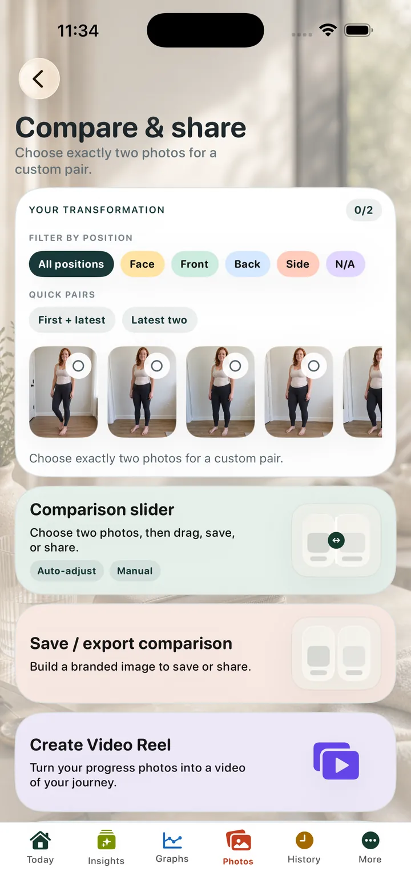
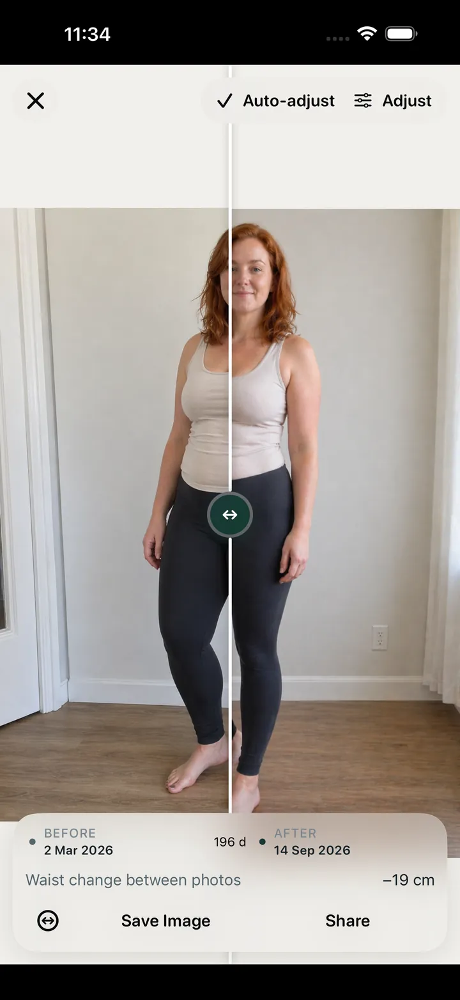

Photo milestones
Keep progress photos connected to your timeline
Store photos as part of your personal tracking record instead of leaving them scattered through a camera roll.
Keep private progress photos, comparison views, weight history, dose records and notes together on iPhone. You choose what to export or share.
Lifetime Premium is free until 31 December 2026.
Claim once and keep Premium. No subscription, no renewal, no account required.

App screens shown in English.
Store photos as part of your personal tracking record instead of leaving them scattered through a camera roll.
Use before-and-after layouts and comparison views for your own review. Sharing is always your choice.
Photo review works best when the surrounding records are easy to scan and export.
OneGLP lets you keep GLP-1 progress photos beside dose history, weight records, symptoms and notes. Free includes 2 new photo uploads per month, while Premium includes unlimited photo uploads. Photo comparison is for personal review only. It does not assess health, diagnose changes or provide medical advice.
Progress photos can help you review visible changes alongside routine records.
OneGLP keeps photo review tied to the same private tracking history as dose, weight and symptom logs.
Safety boundary: Estimated Exposure is a personal tracking estimate, not measured blood concentration and not medical advice. Do not use Estimated Exposure to guide dosing. Always check with your clinician before making medical decisions. Read the medical safety page.
| App name | OneGLP |
|---|---|
| Platform | iPhone and iPad |
| Category | Private GLP-1 tracking app |
| Tracks | doses, dose reminders, injection sites, weight, symptoms, appetite, nutrition, notes, progress photos, optional read-only Apple Health context |
| Account requirement | No mandatory in-app account is required for core tracking. |
| Privacy posture | Local-first. Records stay on the device unless the user exports, shares or restores a local backup. |
| Apple Health scope | Apple Health support is optional and read-only. With permission, OneGLP can read weight, height, glucose, body composition, movement, workouts and nutrition context. OneGLP does not write data back to Apple Health. |
| Export formats | CSV and JSON for core records. Premium adds deeper summaries and PDF summaries for your clinician. |
| Medical boundary | Personal tracking only. OneGLP is not medical advice, not a dosing guide, not a medical device and not a substitute for a qualified clinician. |
| App Store link | OneGLP on the App Store |
Reviewed 16 July 2026. Published by Steven Good.
Official medicine information is linked for reference. OneGLP does not replace product information, prescribing instructions or advice from a qualified clinician.


Yes. OneGLP includes progress photo tracking and comparison tools.
Free includes 2 new photo uploads per month. Existing photos remain available to view, compare, save and share. Premium includes unlimited photo uploads.
Yes. Photos can be reviewed with weight and dose records.
No. Photos are for personal review only.
OneGLP supports user-directed photo review and export choices, including privacy choices where available.
CSV and JSON for core records. Premium adds deeper summaries and PDF summaries for your clinician.
No mandatory in-app account is required for core tracking.
{kind=link}
{kind=link}
{kind=link}